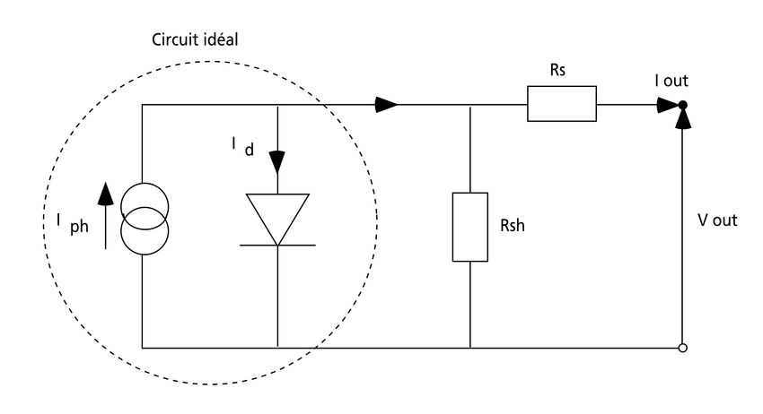
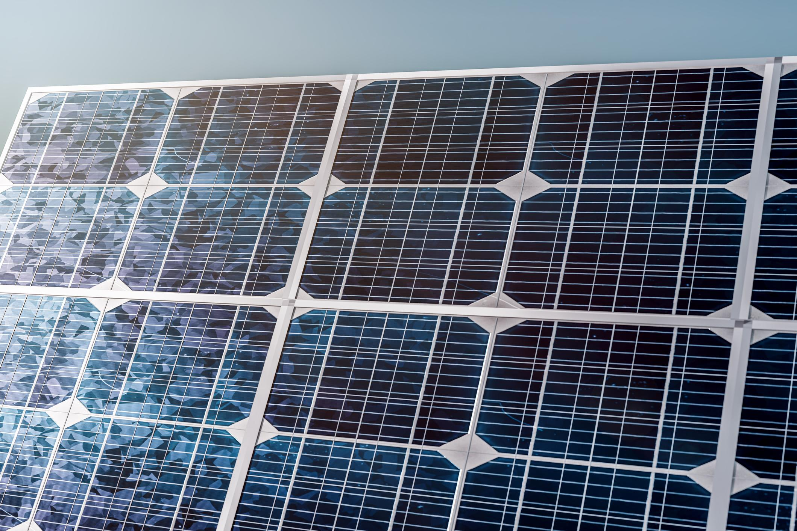
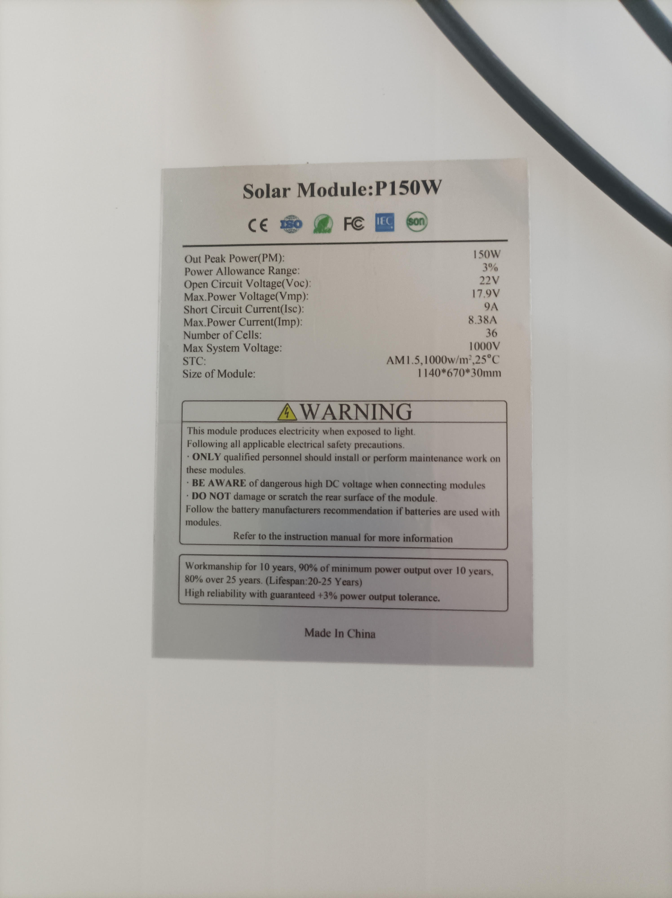
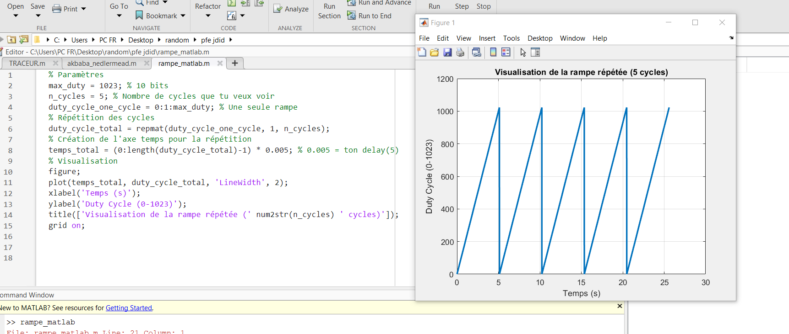

Fondements et enjeux de la transition énergétique
L'énergie joue un rôle central dans le développement économique et social des sociétés modernes. Cependant, les systèmes énergétiques actuels reposent principalement sur l'exploitation des ressources fossiles (pétrole, gaz naturel, charbon), qui demeurent limitées et non renouvelables. Cette situation soulève d'importants enjeux environnementaux et sanitaires, notamment à travers les émissions de gaz à effet de serre responsables du réchauffement climatique.
Objectifs de la transition énergétique
La transition vers l'énergie durable vise à transformer le système énergétique mondial afin de lutter contre le changement climatique tout en favorisant le développement durable. Elle repose sur trois piliers : la décarbonation (abandon progressif des combustibles fossiles), l'efficacité énergétique (réduction des pertes) et la sécurité d'approvisionnement (diversification des sources).
Les Énergies Renouvelables (ENR)
Les énergies renouvelables sont des sources d'énergie issues de ressources naturelles qui se renouvellent continuellement à l'échelle humaine. Contrairement aux combustibles fossiles, leur exploitation génère nettement moins d'émissions de gaz à effet de serre. On distingue plusieurs filières majeures :
- Solaire photovoltaïque et thermique : conversion du rayonnement solaire en électricité ou en chaleur.
- Éolienne : transformation de l'énergie cinétique du vent en énergie mécanique puis électrique.
- Hydroélectricité : exploitation de l'énergie de l'eau en mouvement via des turbines.
- Bioénergie : valorisation de la biomasse (bois, résidus agricoles, déchets organiques).
- Géothermie : captage de la chaleur naturelle du sous-sol terrestre.
Parmi ces filières, le solaire photovoltaïque connaît une croissance exceptionnelle en raison de la disponibilité abondante du rayonnement solaire, de la modularité des installations et de la baisse continue des coûts de fabrication des modules. Néanmoins, la production dépend du niveau d'ensoleillement, ce qui introduit une variabilité nécessitant une gestion adaptée du réseau et des solutions de stockage.
Contexte de l'énergie solaire PV dans le monde
Le solaire photovoltaïque connaît une expansion sans précédent à l'échelle planétaire. En 2024, la capacité installée mondiale a dépassé les 1 500 GW, avec une croissance annuelle moyenne supérieure à 20 %. Cette dynamique s'explique par la baisse drastique des coûts des modules (−90 % en dix ans) et par les politiques de soutien ambitieuses déployées par les principales économies.
Les pays les plus avancés en matière de déploiement PV sont la Chine, les États-Unis, l'Inde, le Japon et l'Allemagne. L'Union Européenne a fixé des objectifs contraignants : 42,5 % d'énergies renouvelables dans la consommation finale d'énergie d'ici 2030. Le photovoltaïque est appelé à devenir la principale source d'électricité d'ici 2050 selon les scénarios de l'Agence Internationale de l'Énergie (AIE).
Tendances technologiques mondiales
Les technologies émergentes comme les cellules tandem perovskite-silicium, les modules bifaciaux et les systèmes de stockage couplés (PV + batteries) redessinent le paysage énergétique mondial. L'efficacité commerciale des modules dépasse désormais les 22 % pour le silicium monocristallin.
Contexte de l'énergie solaire PV en Algérie
L'Algérie dispose d'un potentiel solaire exceptionnel, avec plus de 3 000 heures d'ensoleillement par an sur la majeure partie du territoire et des niveaux d'irradiation atteignant 2 200 kWh/m²/an dans le Sahara. Malgré cette manne énergétique, le pays reste largement dépendant des hydrocarbures pour sa production d'électricité.
Le programme algérien de développement des énergies renouvelables et de l'efficacité énergétique vise l'installation de 15 000 MW d'ENR d'ici 2035, dont 10 000 MW de solaire photovoltaïque. Des projets pilotes ont été lancés, notamment la centrale de Hassi R'mel (combiné solaire-gaz, 150 MW) et plusieurs centrales photovoltaïques de petite et moyenne puissance dans le Sud algérien.
Défis et opportunités
Les principaux freins restent le manque de financements, de compétences locales spécialisées et d'infrastructures de raccordement au réseau électrique dans les zones désertiques. Cependant, la création de l'Agence Nationale des Énergies Renouvelables (ANER) et les récentes réformes juridiques ouvrent la voie à un accélération du déploiement solaire en Algérie.
Résumé et mots clés
Résumé
Ce projet de fin d'études s'inscrit dans le cadre de la transition énergétique et du développement des énergies renouvelables en Algérie. Il propose la conception d'un traceur de courbes I-V intelligent basé sur le microcontrôleur ESP32, capable d'acquérir les caractéristiques électriques d'un panneau photovoltaïque en temps réel. Le système utilise une charge électronique à MOSFET commandée par PWM pour balayer automatiquement la courbe courant-tension. Les données sont transmises via WiFi/MQTT vers une interface web. L'extraction des cinq paramètres internes du modèle à une diode (Rs, Rsh, n, I0, Iph) est réalisée par l'algorithme d'optimisation Nelder-Mead, choisi pour sa robustesse et son indépendance vis-à-vis du calcul de gradient. La validation expérimentale montre une erreur relative inférieure à 0,2 % et un coefficient de détermination R² supérieur à 0,9999.
Mots clés
Principes fondamentaux du photovoltaïque
L'effet photovoltaïque
Découvert par Antoine Becquerel en 1839, l'effet photovoltaïque consiste en la génération d'une tension électrique dans un matériau semi-conducteur sous l'effet d'un rayonnement lumineux. Le mécanisme fondamental repose sur l'interaction photon-matière :
- Un photon incident, d'énergie hν supérieure à l'énergie de la bande interdite Eg, est absorbé.
- Il transmet son énergie à un électron de la bande de valence, qui est excité vers la bande de conduction.
- Une lacune (« trou ») est créée dans la bande de valence.
- Le champ électrique interne de la jonction p-n sépare les porteurs de charge.
- Des contacts métalliques collectent ces porteurs, permettant au courant de circuler dans un circuit extérieur.
Du point de vue de l'instrumentation
Le comportement électrique d'une cellule ou d'un module PV est principalement caractérisé par sa relation courant I – tension V, fortement dépendante des conditions environnementales (ensoleillement et température). La connaissance précise de cette courbe est essentielle pour le diagnostic, l'optimisation et le dimensionnement des systèmes.
Technologies de cellules photovoltaïques
Silicium monocristallin
Cellules élaborées à partir d'un unique cristal de silicium. Structure cristalline homogène conférant des propriétés électriques et optiques supérieures. Rendements commerciaux : 18 – 22 %. Stabilité élevée des paramètres mesurables.
Silicium polycristallin
Fabriquées à partir de silicium polycristallin (multiples cristaux). Procédé moins coûteux mais présence de joints de grains limitant le rendement. Rapport coût-performance avantageux. Part significative du marché mondial.
Cellules en couches minces
Dépôt de semi-conducteurs sur substrat (verre, plastique, métal). Technologies CdTe, CIGS, silicium amorphe. Réduction drastique de la matière première. Adaptées aux applications intégrées au bâtiment (BIPV).
Cellules organiques (OPV)
Semi-conducteurs organiques déposés en solution. Compatibles avec des substrats flexibles et de grande surface. Rendements en laboratoire approchant 20 % en tandem. Défi principal : la stabilité opérationnelle à long terme.
Paramètres caractéristiques extraits de la courbe I-V
Pourquoi extraire les 5 paramètres internes ?
Le constructeur fournit uniquement 4 grandeurs (Voc, Isc, Vopt, Iopt). Pourtant, la connaissance des paramètres internes (Rs, Rsh, n, I0, Iph) est essentielle pour la simulation numérique, le diagnostic des défaillances (points chauds, délaminage, augmentation de Rs…) et l'optimisation du rendement énergétique.
Modélisation
Les modèles électriques d'un panneau solaire PV sont variés. On va adopter celui à 5 paramètres encore appelé modèle à 1 diode. Ce modèle offre un excellent compromis entre précision et complexité pour la caractérisation des modules photovoltaïques commerciaux.
Schéma équivalent du modèle à 1 diode
Une cellule photovoltaïque peut être modélisée comme un générateur de courant proportionnel à l'éclairement (Iph), placé en parallèle avec une diode modélisant les caractéristiques de la jonction p-n à l'obscurité. En pratique, deux résistances parasites altèrent la caractéristique idéale :
- Résistance série Rs : modélise les résistances ohmiques internes (résistivité du semi-conducteur, contacts métalliques, doigts collecteurs).
- Résistance shunt Rsh : traduit les courants de fuite parallèles (défauts de fabrication, courants de surface).

Équation fondamentale
Définition des symboles
| Symbole | Nom | Unité | Description |
|---|---|---|---|
| I | Courant de sortie | A | Courant débité par le panneau à la tension V |
| V | Tension de sortie | V | Tension aux bornes du panneau |
| Iph | Courant photogénéré | A | Courant généré par l'absorption des photons, proportionnel à l'éclairement |
| I0 | Courant de saturation | A | Courant de fuite inverse de la diode, dépendant de la température |
| Rs | Résistance série | Ω | Résistance ohmique totale des contacts et des interconnexions |
| Rsh | Résistance shunt | Ω | Résistance de fuite parallèle traduisant les défauts de la jonction |
| n | Facteur d'idéalité | sans unité | Caractérise la qualité de la jonction p-n (typiquement entre 1 et 2) |
| q | Charge de l'électron | C | 1,602 × 10−19 C |
| k | Constante de Boltzmann | J/K | 1,381 × 10−23 J/K |
| T | Température absolue | K | Température de fonctionnement de la cellule en Kelvin |
Module photovoltaïque étudié
Le panneau utilisé dans ce projet est un module polycristallin de 150 W en conditions STC (Standard Test Conditions). Ses caractéristiques électriques nominales sont présentées ci-dessous :


Données constructeur (STC)
Pmax = 150 W | Voc = 22 V | Isc = 9 A | Vmp = 17,9 V | Imp = 8,38 A | Nombre de cellules = 36 | Tolérance = ±3 %
Extraction des paramètres de notre MPV par l'algorithme d'optimisation
Réponse selon le cahier des charges
« C'est une méthode qui ne nécessite pas le calcul de gradients, ce qui la rend très efficace pour extraire les paramètres (Rs, Rsh) d'un panneau sans être bloqué par des problèmes de convergence mathématique. »
L'algorithme de Nelder-Mead, également connu sous le nom de downhill simplex method, est une méthode d'optimisation numérique directe (ou « derivative-free »). Il a été choisi comme pilier de ce projet pour des raisons qui répondent parfaitement aux contraintes du problème physique posé par la modélisation des panneaux photovoltaïques.
Les contraintes du problème PV
La fonction coût à minimiser dans l'extraction des paramètres PV présente plusieurs difficultés :
- Non-linéarité forte : la relation I-V contient une exponentielle et des produits de variables.
- Paramètres de natures différentes : Rs est très petit (mΩ à Ω), Rsh est très grand (centaines d'Ω), n est adimensionnel (~1-2), I0 est extrêmement faible (µA à nA).
- Gradient difficile à calculer : la dérivée partielle de l'équation transcendante par rapport à chaque paramètre est complexe et coûteuse numériquement.
- Risque de minima locaux : l'espace des paramètres peut présenter des zones où la fonction coût est plate ou possède des minima secondaires.
Principe de fonctionnement
Au lieu de calculer des dérivées, Nelder-Mead utilise un simplexe (un polytope à n+1 sommets dans un espace de dimension n) qui se déforme et se déplace dans l'espace de recherche pour trouver le minimum. Pour nos 5 paramètres, le simplexe est un ensemble de 6 points (vecteurs de paramètres) évalués à chaque itération.
Classement
Évaluer la fonction coût en chaque sommet du simplexe. Classer les sommets du meilleur (plus faible coût) au pire (plus fort coût).
Centroïde
Calculer le centroïde (barycentre) de tous les sommets excepté le pire. Ce point représente la direction prometteuse.
Réflexion
Réfléchir le pire sommet à travers le centroïde. Si le nouveau point est meilleur que le second pire mais pas meilleur que le meilleur, le remplacer.
Expansion
Si le point réfléchi est meilleur que le meilleur actuel, essayer d'aller encore plus loin dans cette direction (expansion). Cela accélère la convergence dans les zones favorables.
Contraction
Si le point réfléchi est mauvais, essayer une contraction (externe ou interne) vers le centroïde pour réduire le simplexe.
Retréciissement
Si aucune des opérations précédentes n'améliore la situation, rétrécir le simplexe vers le meilleur sommet et recommencer.
Avantages spécifiques pour l'extraction PV
Sans calcul de gradient
Contrairement aux méthodes de Newton ou Levenberg-Marquardt, Nelder-Mead n'exige pas le calcul des dérivées partielles. C'est crucial car l'équation à une diode avec 5 paramètres rend le Jacobian complexe et sujet aux instabilités numériques.
Robustesse aux minima locaux
La nature géométrique du simplexe lui permet de « contourner » certains minima locaux et de continuer à explorer l'espace, contrairement aux méthodes purement locales basées sur le gradient.
Tolérance aux échelles hétérogènes
Le simplexe s'adapte naturellement aux ordres de grandeur très différents entre Rs (10-2), Rsh (102) et I0 (10-6), sans nécessiter de normalisation complexe.
Rapidité de convergence
Pour un problème à 5 dimensions avec une fonction coût bien définie, Nelder-Mead converge en quelques centaines d'évaluations, ce qui est parfaitement acceptable pour un traitement embarqué sur ESP32 ou un post-traitement MATLAB.
En résumé
Le choix de Nelder-Mead est justifié par la nature derivative-free, la robustesse et la simplicité d'implémentation de l'algorithme face à un problème d'optimisation multi-paramètres, fortement non linéaire et soumis à des contraintes physiques réelles. Il permet d'extraire fidèlement Rs et Rsh sans risque de divergence lié au calcul de gradients, assurant ainsi une convergence stable vers les vraies valeurs physiques du panneau.
Méthode basiques appliquée pour le relevé
Avant de concevoir le circuit électronique automatisé, une première approche expérimentale a été réalisée afin de comprendre le comportement électrique du panneau photovoltaïque et de valider la méthode de caractérisation par courbe I-V. Cette étape consiste à balayer manuellement une charge résistive variable (rhéostat) connectée en série avec le panneau solaire, et à mesurer les couples tension-courant correspondants pour chaque valeur de résistance.
Principe de la méthode
En faisant varier la résistance du rhéostat de 0 (court-circuit) à une valeur élevée (circuit ouvert), on fait évoluer le point de fonctionnement du panneau sur toute sa caractéristique I-V. Pour chaque position du curseur, on relève la tension V aux bornes du panneau et le courant I circulant dans le circuit à l'aide d'un ampèremètre et d'un voltmètre. Ces données permettent ensuite de tracer point par point la courbe caractéristique du module.
Montage expérimental sur le terrain
Le panneau photovoltaïque a été installé en plein air sur un terrain ensoleillé. Le montage comprend :
- Un panneau solaire polycristallin de 50 W exposé au soleil.
- Un rhéostat (résistance variable) connecté en série comme charge.
- Un ampèremètre numérique pour la mesure du courant I.
- Un voltmètre analogique pour la mesure de la tension V.
- Un cahier de relevés manuels notant les couples (R, I, V) pour chaque point.
Relevés expérimentaux
Les mesures ont été effectuées le 23 avril 2026 à 14h30, à une température ambiante de 18 °C et un ensoleillement de 725 W/m². Le tableau ci-dessous présente les valeurs relevées :
| Résistance R (Ω) | Courant I (A) | Tension V (V) |
|---|---|---|
| 1,9 | 3,6 | 0,2845 |
| 8 | 2,6 | 21,64 |
| 20 | 1,2 | 22,72 |
| 32 | 0,7 | 23,00 |
| 44 | 0,5 | 23,16 |
| 67 | 0,35 | 23,88 |
Limites de la méthode manuelle
Cette approche, bien que simple et économique, présente plusieurs inconvénients : elle est lente (plusieurs minutes pour un balayage complet), sensible aux variations d'ensoleillement pendant les mesures, et offre une résolution limitée (points discrets). C'est pourquoi elle a été remplacée par une solution automatisée à base de MOSFET commandé par ESP32.
Traceur I-V
La courbe courant-tension (I-V) d'un module photovoltaïque représente graphiquement l'évolution du courant de sortie en fonction de la tension appliquée à ses bornes, sous des conditions d'ensoleillement et de température données. La courbe puissance-tension (P-V) s'en déduit par la relation P = V × I.
Les différentes méthodes de tracé
| Méthode | Principe | Avantages | Inconvénients |
|---|---|---|---|
| Résistance variable | Charge résistive variable de 0 à ∞ | Simple, économique | Lente, sensible aux variations environnementales |
| Charge électronique (MOSFET) | MOSFET en mode linéaire commandé par µC | Rapide, précise, automatisée | Coût modéré, dissipation thermique |
| Capacitive | Condensateur comme charge balayante | Très rapide (ms), adaptée au dynamique | Dimensionnement critique, pas de mesures continues |
| Convertisseur DC-DC | Buck/Boost/SEPIC avec modulation du rapport cyclique | Efficace énergétiquement, temps réel | Complexe, expertise en électronique de puissance |
Choix de la méthode adoptée dans ce projet
Pour ce projet, nous avons opté pour une méthode hybride combinant une charge électronique à base de MOSFET et un microcontrôleur ESP32. Ce choix s'appuie sur plusieurs considérations pratiques :
Rapport coût-performance
Les MOSFET de puissance modernes offrent des caractéristiques excellentes à coût modéré, avec des résistances RDS(on) faibles et des temps de commutation rapides.
Contrôle précis
Le fonctionnement du MOSFET en mode linéaire permet une variation continue et précise de la charge équivalente, offrant une résolution supérieure aux méthodes à résistances discrètes.
Protection du module
Le MOSFET permet d'implémenter facilement des protections contre les surintensités et les surtensions, préservant l'intégrité du module PV pendant les mesures.
Facilité d'intégration IoT
La commande par tension de grille se prête naturellement à une interface avec l'ESP32, permettant une automatisation complète et la transmission sans fil des données.
Notre simulation
Avant d'implémenter la génération du signal rampe sur l'ESP32, une phase de validation préliminaire a été réalisée sous MATLAB. Cette démarche permet de vérifier la cohérence de la logique de commande et de s'assurer du bon fonctionnement de l'algorithme avant son déploiement sur le matériel embarqué.
Objectif de la validation MATLAB
MATLAB permet de tester la cohérence de l'algorithme avant son exécution sur ESP32, ce qui réduit les erreurs de conception et facilite la validation expérimentale. L'ESP32 reprend ensuite la même structure de commande pour générer physiquement la rampe PWM.
Principe de la rampe générée
Dans MATLAB, on génère une rampe répétée pour visualiser le comportement attendu de la PWM.
Dans l'ESP32, on exécute la même logique avec ledcWrite() et delay(5). On peut donc
dire que le code embarqué est une traduction directe du modèle simulé. Cette démarche est un
usage classique de MATLAB comme outil de validation avant passage sur hardware.
Paramétrage MATLAB
Le duty cycle varie de 0 à 1023 (10 bits) sur un cycle unique, puis est répété sur 5 cycles avec un pas de temps de 5 ms entre chaque incrément.
Simulation de la rampe PWM
La fonction repmat() réplique le cycle de rampe pour obtenir une séquence périodique identique à celle qui sera produite par l'ESP32.
Validation visuelle
Le tracé temporel permet de vérifier la linéarité de la montée, la période totale (~5,1 s par cycle) et la répétitivité du signal.

Signal Rampe Généré par l'ESP32 et Visualisé à l'Oscilloscope
Une fois la logique de commande validée sous MATLAB, l'algorithme a été implémenté sur l'ESP32.
Le microcontrôleur génère un signal PWM à rampe via la fonction ledcWrite(),
avec un increment progressif du duty cycle suivi d'un reset périodique. Ce signal est ensuite appliqué à la
grille du MOSFET IRF1010F fonctionnant en régime ohmique.
Le MOSFET de puissance est utilisé comme charge électronique variable. En faisant varier progressivement la tension de grille VGS via le signal rampe PWM, on fait évoluer la résistance équivalente RDS(on) du transistor. Ainsi, le MOSFET se comporte comme une résistance variable entre le court-circuit (RDS minimal, VGS élevé) et le circuit ouvert (RDS très grand, VGS nul), permettant de balayer automatiquement toute la courbe I-V du panneau.
Génération ESP32
Le signal est produit par le module LEDC de l'ESP32 (PWM 10 bits, fréquence ~5 kHz) avec incrémentation du duty cycle toutes les 5 ms.
Régime ohmique
Le MOSFET travaille dans sa zone linéaire (VDS < VGS − Vth), offrant une résistance contrôlée par la tension de grille.
Correspondance MATLAB → ESP32 → Oscilloscope
La comparaison entre la simulation MATLAB et le signal réel à l'oscilloscope montre une parfaite cohérence : même forme de rampe linéaire, même période (~5,1 s par cycle), même retour brutal à zéro. Cette validation en chaîne (simulation → implémentation → mesure) garantit la fiabilité du système de balayage automatique.
Notre conception et réalisation
Le système de traceur I-V intelligent repose sur une architecture compacte et modulaire. Le cœur du système est le microcontrôleur ESP32, qui assure simultanément l'acquisition des données, la commande de la charge électronique et la connectivité WiFi/MQTT.
Schéma électronique complet

Chaîne de mesure tension
- Pont diviseur : R1 = 82 kΩ / R2 = 10 kΩ (rapport ~9,2)
- Entrée ADC : GPIO34 (ESP32), résolution 12 bits
- Filtre RC anti-repliement (1 kΩ, 100 nF)
- Plage de mesure : 0 – 10,2 V (Voc du panneau)
Chaîne de mesure courant
- Shunt de précision : 0,056 Ω pour la mesure du courant Ipv
- Amplificateur TL034 pour l'adaptation de niveau et le gain
- Entrée ADC : GPIO35 (ESP32)
- Plage de mesure : 0 – 3,08 A (Isc du panneau)
Commande de charge (MOSFET)
- MOSFET IRF1010F fonctionnant en mode linéaire comme charge variable
- DAC interne ESP32 (ou MCP4725 externe 12 bits) pour la commande de grille
- Variation progressive de la tension de grille permettant de balayer toute la courbe I-V
- Temps de balayage optimisé pour minimiser l'effet des variations d'irradiance
Architecture IoT complète
Les données acquises par l'ESP32 sont transmises en temps réel vers un broker MQTT (10.35.4.100:1883) via le protocole WiFi. Deux topics principaux sont utilisés :
pv/iv: transmission des couples (V, I) sous format CSV pour le tracé des courbespv/params: diffusion des paramètres extraits (Rs, Rsh, n, I0, Iph)
Interface web de visualisation

Une interface web responsive, accessible depuis PC, tablette ou smartphone, s'abonne à ces topics pour afficher en temps réel les courbes I-V et P-V, ainsi que les indicateurs de performance (Voc, Isc, Pmax).
Nos résultats
Grandeurs mesurées (conditions réelles)
Superposition modèle vs données de référence (MATLAB)
L'algorithme de Nelder-Mead implémenté sous MATLAB a convergé après 800 itérations et 1275 évaluations de la fonction coût. La figure ci-dessous montre la superposition parfaite entre la courbe de référence (AKBABA) et le modèle à une diode optimisé :

Paramètres extraits par Nelder-Mead
L'algorithme a convergé vers les valeurs suivantes, reproduisant fidèlement la courbe expérimentale :
Résistance série Rs
Très faible, traduisant de bons contacts et une faible résistivité interne.
Résistance shunt Rsh
Élevée, indiquant des fuites de courant négligeables et une bonne qualité de jonction.
Facteur d'idéalité n
Proche de la plage typique (1–2) pour le silicium cristallin.
Courant de saturation I0
Courant de fuite extrêmement faible, caractéristique d'une diode de qualité.
Courant photogénéré Iph
Légèrement supérieur à Isc mesuré, ce qui est physiquement cohérent car Iph ≈ Isc + ID + Ish.
Indicateurs statistiques de validation
La qualité de l'ajustement entre le modèle à une diode et les données de référence est évaluée par les indicateurs suivants :
Conclusion de la validation
Une erreur relative de 0,192 % et un R² supérieur à 0,9999 prouvent de manière irréfutable que le modèle à 1 diode associé à l'algorithme de Nelder-Mead reproduit fidèlement le comportement réel du panneau photovoltaïque. La méthode sans gradient a permis d'extraire des paramètres physiquement cohérents sans être perturbée par la complexité mathématique de l'équation transcendante.
Conclusion et Perspectives
Bilan du projet
Ce projet de fin d'études a permis de concevoir et de réaliser un traceur I-V intelligent basé sur l'ESP32, capable de mesurer précisément les caractéristiques électriques d'un panneau photovoltaïque et d'en extraire les paramètres internes par optimisation numérique. Les principales réalisations sont :
- Conception d'un circuit électronique de mesure fiable (pont diviseur, shunt, amplificateur TL034, MOSFET IRF1010F).
- Mesure expérimentale des caractéristiques I-V et P-V avec une résolution de 12 bits.
- Modélisation réussie par le modèle à 1 diode avec prise en compte des résistances parasites.
- Extraction des 5 paramètres internes par l'algorithme d'optimisation Nelder-Mead, choisi pour sa robustesse et son absence de calcul de gradient.
- Validation avec une erreur relative de 0,192 % et R² = 0,9999.
- Transmission IoT via MQTT et interface web responsive pour le monitoring temps réel.
Perspectives d'amélioration
MPPT embarqué
Intégration d'un algorithme de suivi du point de puissance maximale (P&O ou IncCond) basé directement sur les paramètres extraits en temps réel.
Correction environnementale
Ajout d'une sonde de température PT100 et d'un pyranomètre pour corriger les courbes I-V selon la norme IEC 60891 et translater vers les conditions STC.
Application mobile dédiée
Développement d'une application smartphone native pour le diagnostic sur site et l'historisation des mesures par QR-code du module.
Monitoring centralisé
Extension à un champ de plusieurs panneaux avec détection automatique des désadaptations (mismatch) et des points chauds par comparaison des paramètres extraits.
Intelligence artificielle
Intégration de modèles de machine learning pour le diagnostic prédictif des dégradations (jaunissement, délaminage, corrosion) à partir de l'évolution temporelle de Rs et Rsh.